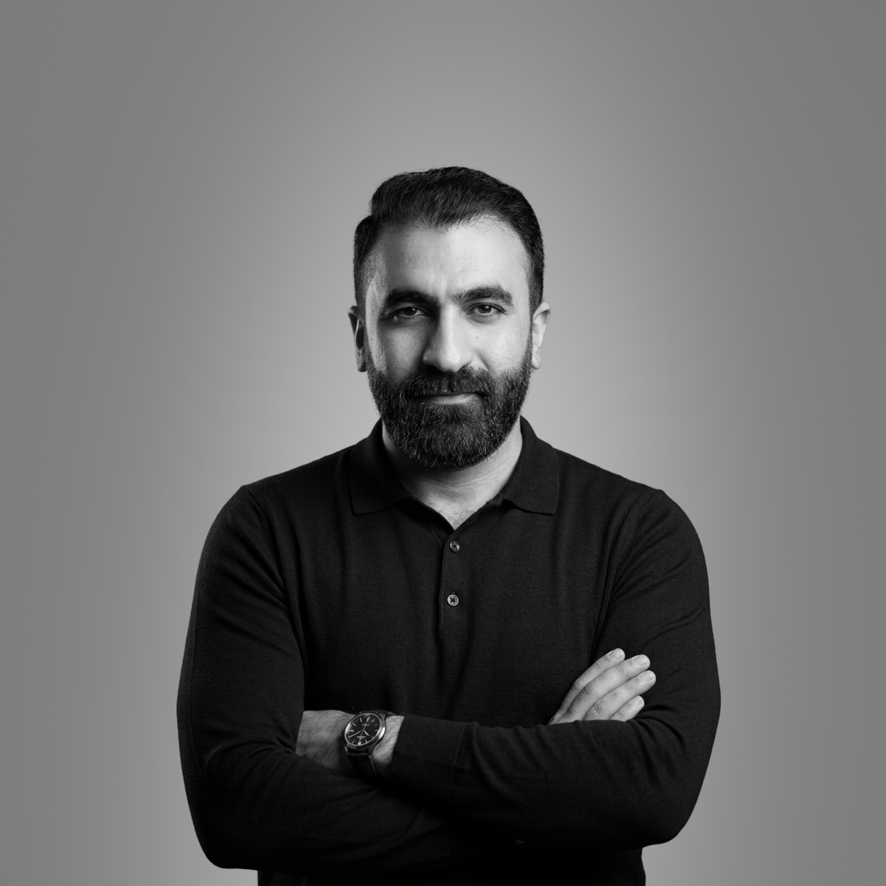

01 / DOCUMENTARYأبو
الصادقكتابة سيناريوهات وبحث
الصادقكتابة سيناريوهات وبحث
يوتيوب • وثائقيات
أبو الصادق
تطوير وكتابة سيناريوهات لفيديوهات وثائقية وقصصية؛ من دراسة الموضوع وبناء المحاور إلى إعداد نص قابل للإنتاج.
مشاهدة معرض الأعمال ↗الموقع الشخصي الرسمي
كاتب سيناريوهات • باحث • مطوّر محتوى • مدرب
أكتب المحتوى، وأطوّر الأفكار، وأنقل المعرفة.
أعمل مع صنّاع المحتوى والمؤسسات على تحويل الأفكار إلى مشاريع تحريرية وتعليمية متقنة؛ من البحث وبناء الفكرة، إلى كتابة السيناريوهات وتطوير البرامج التدريبية.

01 — نبذة شخصية
أنا مجد الدين صفايا، كاتب وباحث أعمل في صناعة المحتوى الوثائقي والقصصي والتعليمي. خلال عملي مع قنوات ومنصات ومؤسسات عربية، طوّرت نصوصاً ومقالات ومشاريع محتوى تخاطب جماهير مختلفة.
أهتم بالمرحلة التي تسبق الكتابة بقدر اهتمامي بالنص النهائي: ما الذي يستحق أن يُقال؟ لمن نقوله؟ وكيف نبني الفكرة بحيث تكون دقيقة ومفهومة وقادرة على جذب الاهتمام؟
لنتحدث عن مشروعك ↗02 — مختارات من أعمالي
الكتابة الوثائقية، البحث، البودكاست، والمحتوى المتخصص. هذه نماذج من المجالات التي عملت فيها، وسأضيف روابط الأعمال الفردية بعد مراجعتها.
تطوير وكتابة سيناريوهات لفيديوهات وثائقية وقصصية؛ من دراسة الموضوع وبناء المحاور إلى إعداد نص قابل للإنتاج.
مشاهدة معرض الأعمال ↗كتابة نصوص قصصية ووثائقية باللهجة السعودية البيضاء، مع عناية ببناء التشويق وتسلسل المعلومات.
عرض نماذج العمل ↗إعداد قصص وحلقات صوتية تعتمد على البحث والسرد المتدرج بما يناسب تجربة الاستماع.
عرض نماذج العمل ↗بحث وتحرير نصوص عن ملفات تاريخية وسياسية وأحداث عامة، مع تنظيم المصادر وتبسيط المعلومات.
عرض نماذج العمل ↗كتابة مقالات متخصصة في قطاع الإطارات، تراعي احتياجات القارئ وتنظيم المحتوى لمحركات البحث.
عرض نماذج العمل ↗إعداد محتوى هندسي متخصص بلغة واضحة تربط المعرفة الفنية باحتياجات الجمهور.
عرض نماذج العمل ↗03 — المقالات والأفكار
هنا أنشر مقالاتي ووجهات نظري حول صناعة المحتوى، الكتابة، العمل، والتعلّم. مساحة أعود إليها كلما كانت لدي فكرة تستحق النقاش.
اذهب إلى المقالات ↗ليست كل فكرة تصلح لأن تصبح محتوى. أحياناً تكون أهم خطوة هي معرفة ما الذي يجب حذفه، قبل أن نقرر ما الذي سنكتبه.
منهج في الكتابة والبحث04 — التدريب والبرامج
أعمل على تقديم برامج تدريبية تنقل الخبرة العملية في صناعة المحتوى إلى خطوات يمكن تطبيقها. ستجد هنا تفاصيل الدورات وروابط التسجيل فور اعتمادها.
05 — كيف يمكنني مساعدتك؟
يمكننا التعاون في مشروع مستقل أو في تطوير محتوى مستمر، بحسب طبيعة العمل وأهدافه.
وثائقيات، فيديوهات يوتيوب، بودكاست، وسرد قصصي مدعوم بالبحث.
تقييم الموضوعات، بناء المحاور، جمع المصادر، وصياغة المعالجة.
تطوير الخط التحريري، تخطيط النشر، وتحسين العلاقة بين المحتوى والجمهور.
هيكلة البرامج والدروس وتحويل المعرفة إلى تجارب تعلّم واضحة.
06 — تواصل معي
أرحّب بالتعاون مع صنّاع المحتوى، الشركات، الجهات التعليمية، وفرق الإنتاج.
راسلني عبر مستقل ↗سأضيف روابط لينكدإن وفيسبوك وإنستغرام وإكس وواتساب فور اعتماد عناوين الحسابات الصحيحة.
لا توجد روابط افتراضية أو حسابات غير مؤكدة.